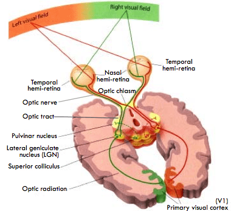
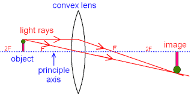
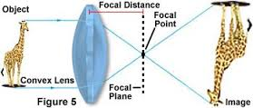

Cakkhu viññāṇa is not just "seeing a picture" of an object; it includes gauging the distance of the object from us. Furthermore, it simultaneously generates recognition (perception), feelings, and other mental factors.
July 15, 2016; revised October 19, 2020; rewritten January 13, 2023
Introduction
1. You may have experienced or seen the following happen to someone else. You are crossing a street and see a speeding car approaching. You instinctively run to the safety of the pavement.
- You see the car coming, gauge its speed and distance, and realize it is too fast. Thoughts of danger and fear arise, and you quickly jump out of its way. All that happens in a split second.
- As you can see, several things happened in that short time. In particular, you recognize it is a car and its distance from you. Since you perceive it is coming too fast, fear arises, and you jump.
- Scientists have only begun to investigate the arising of recognition and feelings associated with an event. But they have made recent progress in resolving the issue of "gauging the distance in a visual event."
2. In 1988, Dee Fletcher almost died due to carbon monoxide poisoning. Her husband found her unconscious just in time to save her life. However, when she recovered, she had lost "sight" in the ordinary sense of the word.
- She could not see or recognize someone standing right in front. She lost the ability to read a book.
- But soon, she realized that she had some peculiar abilities. She could grab a pencil from the hand of a person who held it in front of her, even though she could not actually "see" the pencil or the person.
- Her vision is good enough for picking something up but not good enough for seeing it!
Dee Fletcher's Case Provided Many Clues on Vision
3. Since then, researchers have done numerous experiments on her, which have led to some astonishing findings about how vision works.
- For example, they tested her with a mailbox with a narrow slot for inserting letters. Even though she could not see the mailbox -- let alone the slit or the envelope -- she was able to insert the letter in the slot without effort. Even when they tilted the slit, she did not have a problem at all! It was as if a phantom inside her was doing that task for her.
4. Another ability of Dee was walking around the house without bumping into furniture or walls. Since that ability could be due to her familiarity with the house, they took her to an unfamiliar trail. She had no problem walking there without tripping over rocks or bumping into trees.
- This disorder is known as visual agnosia.
- It turns out that there are two relatively independent visual systems in the brain: One is for conscious perception (visual cortex), which was severely damaged in Dee. The other was for unconscious control of action (superior colliculus), which is largely preserved.
Two Ways of Visual Processing
5. The following figure shows the optical nerve splitting and connecting to those two areas in the brain.

You can download the figure here.
6. The presence of two visual processing streams in the brain has been known only since 1982. Even though the role of the visual cortex in the brain (in producing a picture "in mind") had been known before that, the role of a second processing area in the brain (superior colliculus) that helps with figuring out the "depth of vision" or how far a given object was proposed in 1982 by Leslie Ungerleider and Mort Mishkin.
- Of course, their model helped explain the symptoms experienced by Dee Fletcher. She had parts of her visual cortex damaged by carbon monoxide poisoning, while her superior colliculus was left intact. Her eyes sent the signals to the visual cortex, but the damaged visual cortex could not process that signal.
- You do not need to know the details of the visual cortex, superior colliculus, or any other technical term to get the idea I plan to convey. I do not know the finer details about them either.
How Vision Happens- Still a Mystery for Science
7. Of course, scientists are only aware that those two areas in the brain contribute to those two functions. They do not know exactly how the visual cortex gleans information about the object (i.e., its visual characteristics.) Also, it is not known how the superior colliculus figures out the object's dimensions and how far it is (to grab an item correctly, both types of information are needed).
- We need to realize that "no light" is going to the visual cortex, and there is no screen at the back of the head that displays the object in question. The optical nerve only transmits a chemical (and electrical) signal. The visual cortex somehow generates a "picture" for our minds to see.
- Even more mysterious is how the superior colliculus figures out the depth of vision from that chemical signal coming through the optical nerve.
- We will come back to these issues in upcoming posts, but first, let us continue with our discussion on what the scientists know at this time and how they found them.
Further Details of Dee Fletcher's Case
8. many research papers describe experiments involving Dee Fletcher, and the two principal researchers have written a book on this research: "Sight Unseen - An Exploration of Conscious and Unconscious Vision" by M. A. Goodale and A. D. Milner (2004).
- The above book is a bit expensive. Chapter 4 of V. S. Ramachandran's popular book, "Phantoms in the Brain" (1998) provides a less technical description. That book also describes some other interesting findings about the brain. In future posts, I hope to discuss some of those observations (particularly his and others' work on "phantom limbs").
- There is also a Wikipedia article on the Two-streams hypothesis on vision.
9. The book by Goodale and Milner also describes a visual problem that is the opposite of that of Ms. Fletcher. This syndrome is called "optic ataxia." Those with it can "see" and recognize objects very well, but they have difficulty in actions involving them.
- Those who suffer from optic ataxia can see the mailbox and slit described in #2 above. However, they have much difficulty putting a letter through the slit.
- It turns out that these people have their superior colliculus damaged, but their visual cortex works fine.
How Does the Mind Figure out the Distances to Objects Around Us?
10. Have you thought about how we can move around without bumping into each other and other objects like trees on the ground and cars on the road? The presence of the two processing streams can BEGIN TO explain how the brain figures out not only "what is in front of us (a human, tree, or a car)" but also "how far is it at and how big it is."
- As mentioned above, part of the signal going through the optical nerve to the visual cortex deals with the first task, and the other part going to the superior colliculus deals with the "how far and how big" issue.
10. Even though scientists have figured out that those two areas in the brain (visual cortex and the superior colliculus) somehow extract the two kinds of information, they have no idea how those areas extract that information from the chemical signal coming through the optical nerve.
- Scientists know that the lens in an eye projects an image of the object to the back of the eye (retina); see the figure above. It is pretty much the same as an image you can see with a lens:

This is pretty much how a camera captures an image:

How Can a Chemical Signal Provide the Perception of Sight (and Light)?
11. Of course, the film in an old camera undergoes chemical changes when the image falls on it. Then that film is chemically processed to reveal the picture.
- In the same way, when the image of an object falls on the retina of an eye, the cells on the retina generate a chemical (and electrical) signal. The optical nerve transmits this signal to the visual cortex and the superior colliculus in the brain. There is no "picture" transmitted to the brain.
- So, how does the visual cortex generate a visual of the object starting with the chemical signal from the eye?
- Even more puzzling is how the superior colliculus figures out the distance to the object (and the object's dimensions) solely based on that same signal.
12. Even within the visual cortex, there are 30 different areas specialized to carry out different tasks. They all help provide a "comprehensive picture" of the object.
- For example, the area called V4 deals with the object's color but does not care about the direction of motion.
- On the other hand, area MT (also called V5) responds to targets in the visual field based on their direction of motion but does not care about the object's color. Specialized sub-areas in the visual cortex carry out multiple tasks.
The brain is Not a Computer - It Can Change
13. Brain is indeed a very sophisticated machine! However, as we will find out in upcoming posts, it is not a typical machine like a computer. It can change on its own!
- While a computer cannot get rid of parts that go bad, the brain can replace or repair bad parts and even make new parts. This is puzzling neuroscientists right now. They have confirmed that these things happen (I will discuss examples in future posts) but have no idea HOW the brain does that. (However, when a whole section is damaged, like in the case of the visual cortex or superior colliculus, such rejuvenation is not possible).
- The key to this puzzle is the following. Our "mental body," or the gandhabba, controls the physical body. The gandhabba, or the manomaya kāya, has three components: kammaja kāya, cittaja kāya, and utuja kāya. The cittaja kāya plays the dominant role in CHANGING brain functions. In other words, it is OUR THOUGHTS that can change the brain!
- Note that "cittaja kāya" means not a separate "body" but part of the manomaya kāya associated with our physical body.
- Ultimately, one attains Nibbāna by gradually transforming one's brain. In other words, getting rid of greed, hate, and ignorance can change one's brain! However, even a Buddha can only show the way, and one has to make an effort.
- The four types of bodies that we have and the gandhabba are discussed in the section "Gandhabba (Manomaya Kaya)." The critical functions of the cittaja kāya are also discussed in the post, "Udayavaya Ñāna – Importance of the Cittaja Kaya."
Buddha Dhamma and Science - a Symbiotic Relationship
14. We live in a truly opportune time to comprehend the value of Buddha Dhamma. Modern science provides clues that can be used with Buddha Dhamma to clarify many issues and vice versa. See "Buddha Dhamma – A Scientific Approach" and "Quantum Mechanics and Dhamma."
- In this series of posts, I hope to suggest some such avenues for scientists to explore based on Buddha Dhamma, which can also explain many of these "new findings."
- As I have mentioned, attaining Nibbāna does not require such details. However, for most people, future confirmation of such "predictions" hopefully will help build confidence in Buddha Dhamma and to appreciate its value.
- Of course, the real value of Buddha Dhamma is not in exposing such mundane things but in showing the path to liberation from suffering (Nibbāna). But it is good to have faith in Buddha Dhamma to feel confident that one is not wasting one's precious time in learning Buddha Dhamma.
Cakkhu viññāṇa não se resume apenas a “ver uma imagem” de um objeto; inclui avaliar a distância do objeto em relação a nós. Além disso, gera simultaneamente reconhecimento (percepção), sentimentos e outros fatores mentais.
15 de julho de 2016; revisado em 19 de outubro de 2020; reescrito em 13 de janeiro de 2023
Introdução
1. Você talvez já tenha vivenciado ou visto o seguinte acontecer com outra pessoa. Você está atravessando a rua e vê um carro em alta velocidade se aproximando. Instintivamente, você corre para a segurança da calçada.
- Você vê o carro se aproximando, avalia sua velocidade e distância e percebe que ele está indo rápido demais. Pensamentos de perigo e medo surgem, e você rapidamente salta para fora do caminho. Tudo isso acontece em uma fração de segundo.
- Como você pode ver, várias coisas aconteceram nesse curto espaço de tempo. Em particular, você reconhece que se trata de um carro e avalia a distância dele até você. Como percebe que ele está se aproximando rápido demais, surge o medo, e você salta.
- Os cientistas apenas começaram a investigar o surgimento do reconhecimento e dos sentimentos associados a um evento. Mas eles fizeram progressos recentes na resolução da questão de “avaliar a distância em um evento visual”.
2. Em 1988, Dee Fletcher quase morreu devido a envenenamento por monóxido de carbono. Seu marido a encontrou inconsciente bem a tempo de salvar sua vida. No entanto, quando ela se recuperou, havia perdido a “visão” no sentido comum da palavra.
- Ela não conseguia ver nem reconhecer alguém que estivesse bem na sua frente. Perdeu a capacidade de ler um livro.
- Mas logo percebeu que possuía algumas habilidades peculiares. Conseguia pegar um lápis da mão de uma pessoa que o segurava à sua frente, mesmo sem conseguir realmente “ver” o lápis ou a pessoa.
- Sua visão é boa o suficiente para pegar algo, mas não o suficiente para enxergá-lo!
O caso de Dee Fletcher forneceu muitas pistas sobre a visão
3. Desde então, pesquisadores realizaram inúmeros experimentos com ela, o que levou a algumas descobertas surpreendentes sobre como a visão funciona.
- Por exemplo, eles a testaram com uma caixa de correio com uma fenda estreita para inserir cartas. Mesmo sem conseguir ver a caixa de correio — muito menos a fenda ou o envelope —, ela conseguiu inserir a carta na fenda sem esforço. Mesmo quando inclinaram a fenda, ela não teve nenhum problema! Era como se um fantasma dentro dela estivesse realizando essa tarefa por ela.
4. Outra habilidade de Dee era andar pela casa sem esbarrar em móveis ou paredes. Como essa habilidade poderia ser resultado de sua familiaridade com a casa, eles a levaram a uma trilha desconhecida. Ela não teve nenhum problema em andar por lá sem tropeçar em pedras ou esbarrar em árvores.
- Esse distúrbio é conhecido como agnosia visual.
- Acontece que existem dois sistemas visuais relativamente independentes no cérebro: um é para a percepção consciente (córtex visual), que estava gravemente danificado em Dee. O outro era para o controle inconsciente da ação (colículo superior), que está amplamente preservado.
Duas formas de processamento visual
5. A figura a seguir mostra o nervo óptico se dividindo e se conectando a essas duas áreas do cérebro.
Você pode baixar a figura aqui.
6. A existência de duas vias de processamento visual no cérebro só é conhecida desde 1982. Embora o papel do córtex visual no cérebro (na produção de uma imagem “na mente”) já fosse conhecido antes disso, o papel de uma segunda área de processamento no cérebro (colículo superior), que auxilia na determinação da “profundidade de visão” ou da distância a que um determinado objeto se encontrava, foi proposto em 1982 por Leslie Ungerleider e Mort Mishkin.
- É claro que o modelo deles ajudou a explicar os sintomas apresentados por Dee Fletcher. Ela tinha partes do córtex visual danificadas por envenenamento por monóxido de carbono, enquanto seu colículo superior permaneceu intacto. Seus olhos enviam os sinais para o córtex visual, mas o córtex visual danificado não conseguia processar esses sinais.
- Você não precisa conhecer os detalhes do córtex visual, do colículo superior ou de qualquer outro termo técnico para entender a ideia que pretendo transmitir. Eu também não conheço os detalhes mais específicos sobre eles.
Como ocorre a visão — ainda um mistério para a ciência
7. É claro que os cientistas sabem apenas que essas duas áreas do cérebro contribuem para essas duas funções. Eles não sabem exatamente como o córtex visual obtém informações sobre o objeto (ou seja, suas características visuais). Além disso, não se sabe como o colículo superior determina as dimensões do objeto e a que distância ele está (para pegar um objeto corretamente, ambos os tipos de informação são necessários).
- Precisamos entender que “nenhuma luz” chega ao córtex visual e que não há nenhuma tela na parte de trás da cabeça que exiba o objeto em questão. O nervo óptico transmite apenas um sinal químico (e elétrico). O córtex visual, de alguma forma, gera uma “imagem” para que nossas mentes a vejam.
- Ainda mais misterioso é como o colículo superior determina a profundidade da visão a partir desse sinal químico que chega pelo nervo óptico.
- Voltaremos a essas questões em posts futuros, mas, primeiro, vamos continuar nossa discussão sobre o que os cientistas sabem até o momento e como chegaram a essas descobertas.
Mais detalhes sobre o caso de Dee Fletcher
8. Muitos artigos científicos descrevem experimentos envolvendo Dee Fletcher, e os dois principais pesquisadores escreveram um livro sobre essa pesquisa: “Sight Unseen – An Exploration of Conscious and Unconscious Vision”, de M. A. Goodale e A. D. Milner (2004).
- O livro acima é um pouco caro. O capítulo 4 do popular livro de V. S. Ramachandran, “Phantoms in the Brain” (1998), oferece uma descrição menos técnica. Esse livro também descreve algumas outras descobertas interessantes sobre o cérebro. Em posts futuros, espero discutir algumas dessas observações (principalmente o trabalho dele e de outros pesquisadores sobre “membros-fantasma”).
- Há também um artigo na Wikipédia sobre a hipótese das duas vias na visão.
9. O livro de Goodale e Milner também descreve um problema visual que é o oposto do da Sra. Fletcher. Essa síndrome é chamada de “ataxia óptica”. Quem sofre dela consegue “ver” e reconhecer objetos muito bem, mas tem dificuldade em realizar ações que envolvam esses objetos.
- Quem sofre de ataxia óptica consegue ver a caixa de correio e a fenda descritas no item 2 acima. No entanto, tem muita dificuldade em colocar uma carta pela fenda.
- Verifica-se que essas pessoas têm o colículo superior danificado, mas seu córtex visual funciona normalmente.
Como a mente calcula as distâncias até os objetos ao nosso redor?
10. Você já pensou em como conseguimos nos movimentar sem esbarrar uns nos outros e em outros objetos, como árvores no chão e carros na rua? A presença das duas vias de processamento pode COMEÇAR A explicar como o cérebro determina não apenas “o que está à nossa frente (uma pessoa, uma árvore ou um carro)”, mas também “a que distância está e qual é o seu tamanho”.
- Como mencionado acima, parte do sinal que passa pelo nervo óptico até o córtex visual lida com a primeira tarefa, e a outra parte, que vai para o colículo superior, lida com a questão de “a que distância e qual o tamanho”.
10. Embora os cientistas tenham descoberto que essas duas áreas do cérebro (córtex visual e colículo superior) de alguma forma extraem os dois tipos de informação, eles não têm ideia de como essas áreas extraem essa informação do sinal químico que chega pelo nervo óptico.
- Os cientistas sabem que o cristalino do olho projeta uma imagem do objeto na parte posterior do olho (retina); veja a figura acima. É praticamente o mesmo que uma imagem que você vê com uma lente:
É basicamente assim que uma câmera captura uma imagem:
Como um sinal químico pode proporcionar a percepção da visão (e da luz)?
11. É claro que o filme de uma câmera antiga sofre alterações químicas quando a imagem incide sobre ele. Em seguida, esse filme é processado quimicamente para revelar a imagem.
- Da mesma forma, quando a imagem de um objeto incide sobre a retina do olho, as células da retina geram um sinal químico (e elétrico). O nervo óptico transmite esse sinal ao córtex visual e ao colículo superior no cérebro. Não há nenhuma “imagem” transmitida ao cérebro.
- Então, como o córtex visual gera uma imagem do objeto a partir do sinal químico proveniente do olho?
- Ainda mais intrigante é como o colículo superior calcula a distância até o objeto (e as dimensões do objeto) baseando-se exclusivamente nesse mesmo sinal.
12. Mesmo dentro do córtex visual, existem 30 áreas diferentes especializadas em realizar tarefas distintas. Todas elas ajudam a fornecer uma “imagem abrangente” do objeto.
- Por exemplo, a área chamada V4 lida com a cor do objeto, mas não leva em conta a direção do movimento.
- Por outro lado, a área MT (também chamada de V5) responde a alvos no campo visual com base em sua direção de movimento, mas não se importa com a cor do objeto. Subáreas especializadas no córtex visual realizam múltiplas tarefas.
O cérebro não é um computador — ele pode mudar
13. O cérebro é, de fato, uma máquina muito sofisticada! No entanto, como descobriremos em posts futuros, ele não é uma máquina típica como um computador. Ele pode mudar por conta própria!
- Enquanto um computador não consegue se livrar de peças que apresentam defeito, o cérebro pode substituir ou reparar peças defeituosas e até mesmo criar novas peças. Isso está intrigando os neurocientistas atualmente. Eles confirmaram que essas coisas acontecem (discutirei exemplos em posts futuros), mas não têm ideia de COMO o cérebro faz isso. (No entanto, quando uma seção inteira é danificada, como no caso do córtex visual ou do colículo superior, tal rejuvenescimento não é possível).
- A chave para esse enigma é a seguinte. Nosso “corpo mental”, ou gandhabba, controla o corpo físico. O gandhabba, ou manomaya kāya, possui três componentes: kammaja kāya, cittaja kāya e utuja kāya. O cittaja kāya desempenha o papel dominante na MUDANÇA das funções cerebrais. Em outras palavras, são NOSSOS PENSAMENTOS que podem mudar o cérebro!
- Observe que “cittaja kāya” não significa um “corpo” separado, mas parte do manomaya kāya associado ao nosso corpo físico.
- Em última análise, alcança-se o Nibbāna transformando gradualmente o próprio cérebro. Em outras palavras, livrar-se da ganância, do ódio e da ignorância pode transformar o cérebro! No entanto, mesmo um Buddha só pode mostrar o caminho, e cada um precisa se esforçar.
- Os quatro tipos de corpos que possuímos e o gandhabba são discutidos na seção “Gandhabba (Manomaya Kaya)”. As funções essenciais do cittaja kāya também são abordadas na postagem “Udayavaya Ñāna – Importância do Cittaja Kaya”.
O Dhamma do Buddha e a Ciência – uma relação simbiótica
14. Vivemos em uma época verdadeiramente propícia para compreender o valor do Dhamma do Buddha. A ciência moderna fornece pistas que podem ser utilizadas em conjunto com o Dhamma do Buddha para esclarecer muitas questões e vice-versa. Veja “Dhamma do Buddha – Uma Abordagem Científica” e “Mecânica Quântica e Dhamma”.
- Nesta série de posts, espero sugerir alguns desses caminhos para os cientistas explorarem com base no Dhamma de Buddha, o que também pode explicar muitas dessas “novas descobertas”.
- Como já mencionei, alcançar o Nibbāna não requer tais detalhes. No entanto, para a maioria das pessoas, a futura confirmação dessas “previsões” irá, espero, ajudar a construir confiança no Dhamma do Buddha e a valorizá-lo.
- É claro que o verdadeiro valor do Dhamma do Buddha não está em revelar essas coisas mundanas, mas em mostrar o caminho para a libertação do sofrimento (Nibbāna). Mas é bom ter fé no Dhamma do Buddha para ter a certeza de que não se está desperdiçando seu precioso tempo ao estudá-lo.